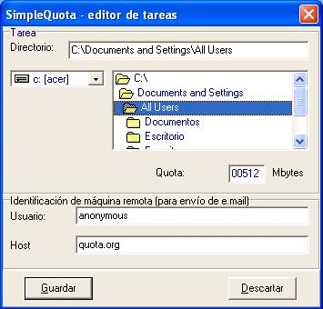

Las tareas deben modificarse al menos una vez, en el momento de la creación,
de manera que indiquen la información necesaria (al menos, el nombre del
directorio y el tamaño máximo a soportar) para que el programa pueda realizar la
ejecución normalmente.

Como puede verse en la imagen, sólo debe indicarse el directorio deseado (bien
escribiéndolo o bien escogiéndolo en la caja de unidades y la caja de directorios;
se mantendrán en sincronía si no hay errores), la cuota máxima a guardar, en megabytes, y un usuario y un servidor de correo para enviar el e.mail en caso de
superarse la cuota (o un 90% de la misma).
El usuario y el servidor son opcionales. Si no se indican, el programa no tratará
de enviar ningún e.mail (tendrá que tenerse en cuenta el log para saber si las
tareas sobrepasan o no la cuota).